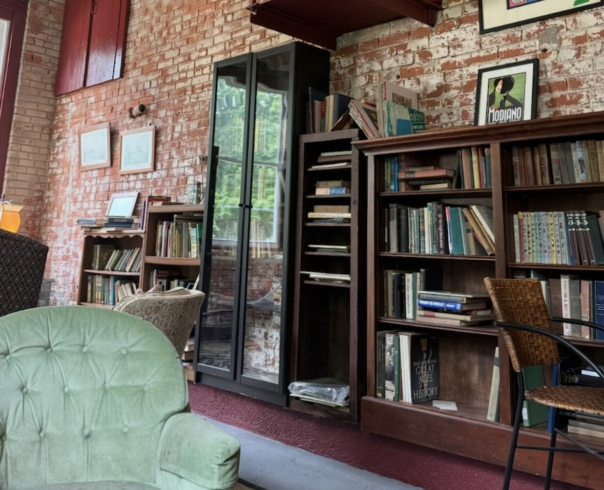
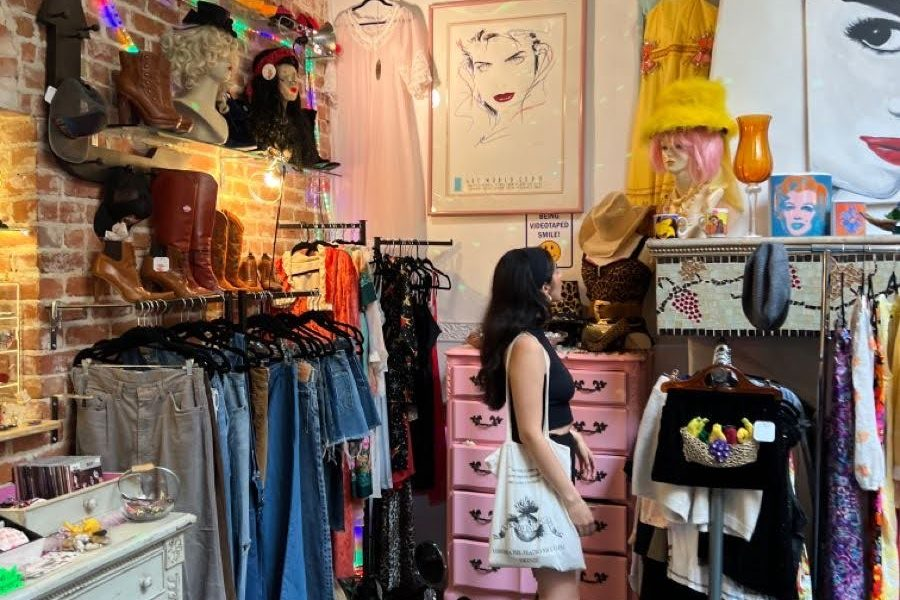

While you can thrift for many things, such as furniture, shoes, decor, etc., clothes are the most popular. According to According to USAToday, this year, the second highest reason people thrifted was to find unique clothing, at 41%. Shining a light on all the different types of clothes and furniture people can buy.
The number of people thrifting to find unique items has caught the attention of brands, and according to CBS News, top fashion designers are taking note. Now, more than 120 retailers have started reselling their clothes. Thrift stores are gaining the attention of places to find ‘one-of-a-kind pieces,’ catching the attention of the younger generations.
